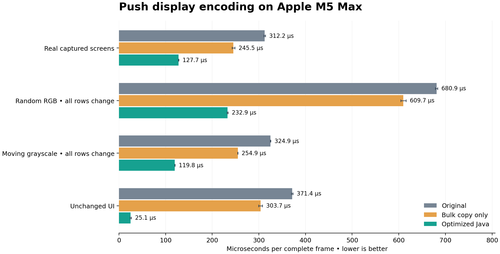

PULL / PERFORMANCE EVIDENCE / 15 OCTOBER 2026
Faster Push frames, ordinary Java.
On this Apple M5 Max, the optimized encoder is 2.44× faster on real captured screens,
2.92× faster when every pixel changes randomly, and
14.81× faster for unchanged UI frames. Every output byte retains the existing wire format.
Measured on Bitwig’s bundled Zulu Java 25.0.4.1. Java 21-compatible source; no native code or incubating Vector API.

Complete CPU path, per frame
| Workload | Original µs | Bulk copy only µs | Optimized µs | Speedup |
|---|
| Real captured screens | 312.22 ± 1.65 | 245.47 ± 3.00 | 127.70 ± 0.50 | 2.44× |
|---|
| Random RGB • all rows change | 680.95 ± 2.58 | 609.75 ± 5.61 | 232.86 ± 1.04 | 2.92× |
|---|
| Moving grayscale • all rows change | 324.86 ± 0.52 | 254.90 ± 0.39 | 119.84 ± 0.34 | 2.71× |
|---|
| Unchanged UI | 371.41 ± 1.68 | 303.73 ± 4.06 | 25.08 ± 1.26 | 14.81× |
|---|
Mean ± JMH’s reported 99.9% confidence interval. Three separate JVM forks, four one-second warmups and five one-second measurements per fork. Eight input frames rotate in each workload. No measurements were discarded from this final suite.
Scope: these are offline measurements of encoding and the copy into direct USB memory. Rendering, controller/event handling, scheduling, locks and physical USB transfer are excluded. They do not establish end-to-end display latency or audio-engine performance. Real frames are replayed captures, not a live Bitwig profile.
What changed
- Bulk BGRA reads into reusable row arrays and bulk writes into the USB buffer.
- Small integer loops that HotSpot compiles to 128-bit NEON operations; calibration and bit packing run across four integer lanes.
- Exact cached-row equality and an existing-threshold grayscale fast path. Both avoid unnecessary work without approximating colors.
- Signal shaping folds into packing; padded bytes are initialized once. Unchanged frames still follow the existing USB submission path.
The encoder owns approximately 0.93 MiB of primitive storage, about 0.62 MiB more than the old byte buffer, plus object headers. The scalar short-narrowing pass remains separate because mixing it into the arithmetic loop prevented vectorization on this JVM.
SIMD is measured, not assumed
On the same changing-random workload, disabling HotSpot auto-vectorization with -XX:-UseSuperWord increases optimized time from
232.86 µs to 651.71 µs (2.80× slower).
All rows change, so this control does not obtain its gain from row reuse. Native bulk-copy intrinsics remain enabled in both runs.
Capstone decoding of the actual C2 output confirms NEON vector-register instructions. Complete decoded assembly · Original JVM hex dump.
0x000000011ee88558 and v16.16b, v21.16b, v16.16b ; NEON
0x000000011ee88564 mul v18.4s, v22.4s, v18.4s ; NEON
0x000000011ee88568 sshr v19.4s, v18.4s, #0x1f ; NEON
0x000000011ee8856c and v19.16b, v21.16b, v19.16b ; NEON
0x000000011ee88578 mul v17.4s, v23.4s, v17.4s ; NEON
0x000000011ee8857c sshr v17.4s, v17.4s, #8 ; NEON
0x000000011ee88580 smin v17.4s, v21.4s, v17.4s ; NEON
0x000000011ee88588 smax v17.4s, v24.4s, v17.4s ; NEON
0x000000011ee88594 and v16.16b, v16.16b, v18.16b ; NEON
0x000000011ee88598 orr v16.16b, v17.16b, v16.16b ; NEON
0x000000011ee885b0 and v16.16b, v21.16b, v16.16b ; NEON
0x000000011ee885b8 mul v18.4s, v22.4s, v18.4s ; NEON
CPU flamegraphs
Click a graph, then click stack frames to zoom or use its search button. Each profile sampled a separate warmed-up benchmark for 12 seconds at a 1 ms interval. Widths are proportions within each run; the faster run processes more frames, so cross-graph width alone is not an absolute speed comparison.
Baseline · Real captured screens12,019 CPU samples. Inclusive shares: LegacyFrameEncoder.encode 75.9%, LegacyFrameEncoder.copy 24.0%, PushColorCalibration.toDisplayRGB 10.9%, PushColorCalibration.calibrate 9.8%.
Baseline · Random RGB • all rows change12,021 CPU samples. Inclusive shares: LegacyFrameEncoder.encode 88.6%, PushColorCalibration.toDisplayRGB 22.8%, LegacyFrameEncoder.copy 11.3%, PushColorCalibration.calibrate 2.7%.
Optimized · Real captured screens12,027 CPU samples. Inclusive shares: PushFrameEncoder.encode 96.0%, PushFrameEncoder.luminance 26.9%, PushFrameEncoder.channel 26.4%, PushFrameEncoder.narrow 11.1%.
Optimized · Random RGB • all rows change12,025 CPU samples. Inclusive shares: PushFrameEncoder.encode 97.8%, PushFrameEncoder.channel 53.9%, PushFrameEncoder.luminance 21.3%, PushFrameEncoder.pack 9.1%.
Sampled latency
| Encoder | Workload | p50 µs | p95 µs | p99 µs | p99.9 µs |
|---|
| baseline | Real captured screens | 313.3 | 349.7 | 361.0 | 372.4 |
| baseline | Random RGB • all rows change | 691.2 | 718.8 | 732.2 | 759.0 |
| optimized | Real captured screens | 126.7 | 187.6 | 189.4 | 205.6 |
| optimized | Random RGB • all rows change | 232.7 | 238.3 | 253.2 | 264.2 |
Separate JMH sample-time runs: two forks, three one-second warmups, two three-second measurements. These are observed distributions on a shared desktop, including scheduling interference, not real-time guarantees.
Allocation and GC
| Encoder | Workload | Bytes allocated / frame | Observed collections |
|---|
| baseline | Real captured screens | Unavailable | 0 |
| baseline | Random RGB • all rows change | Unavailable | 0 |
| optimized | Real captured screens | Unavailable | 0 |
| optimized | Random RGB • all rows change | Unavailable | 0 |
Separate JMH GC-profiler run: one fork, three one-second warmups and three one-second measurements. JMH did not expose byte-allocation measurements on this trimmed runtime; zero observed collections does not prove zero allocations or guarantee future pause behavior. The persistent row arrays are allocated once, outside measurement.
Correctness and delivery
1,178 tests passed in the full offline package gate, with 0 failures and 0 errors.
The new tests cover all 16,777,216 RGB values, varying alpha, grayscale threshold edges, cached-row changes, buffer byte order, read-only views, padding, and exact header/frame output through the actual display worker to a fake USB endpoint.
The encoder tests also passed on Bitwig’s bundled JVM. The complete suite uses the full development JDK because two existing class-loader tests compile Java fixtures; Bitwig’s trimmed runtime lacks that compiler. No changed-code deprecation warnings. No extension was installed and no running Bitwig session was changed; physical hardware verification remains unperformed.
Raw evidence and reproduction
Benchmark README · Average-time JSON ·
SIMD control JSON · Latency JSON · Allocation JSON ·
Exact commands · Environment, source hashes and test counts ·
Capture hashes · Package gate log
Baseline source: fd562c842a2079a0cf72026f91dd5c5b48f1714e. Captured project images stay outside Git. Original logs and raw per-fork measurement arrays are retained. Results apply to this CPU/JVM; other platforms need their own measurements.